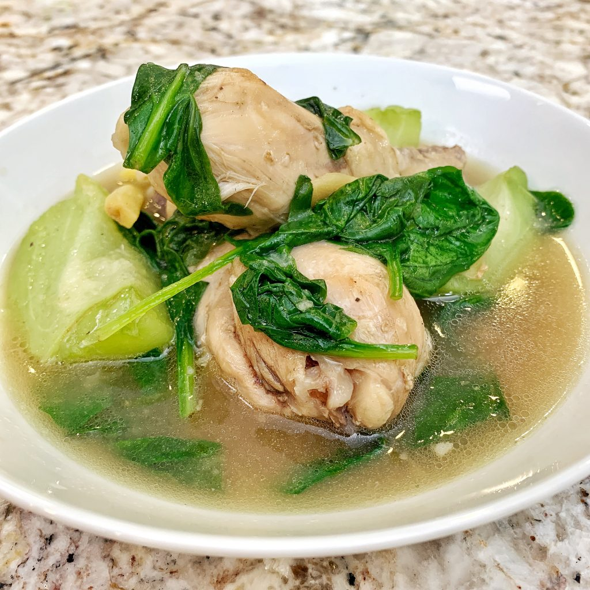

Chicken Tinola

Tinola is an easy, one-pot soup from the Philippines. Chicken, chayote squash (or papaya!), bok choy, and spinach are simmered with fresh ginger in a savory broth that's often served with white rice.
Ingredients:
- 1 tablespoon cooling oil
- 1 medium onion, chopped
- 2 cloves garlic, minced
- 1 (1 1/2inch) piece fresh ginger, peeled and thinly sliced
- 1 tablespoon fish sauce
- 3 pounds chicken leggs and thighs, rinsed and patted dry
- 2 (14 ounce) cans chicken broth
- 1 chayote squash, peeled and cut into bite-sized pieces
- salt and ground black pepper to taste
- 1 head bok choy, chopped
- 1 (8 ounce) package fresh spinach, chopped